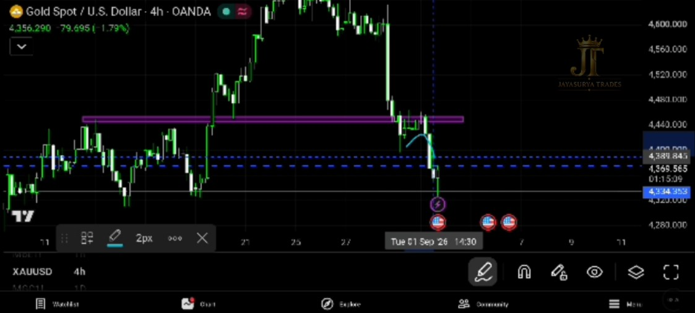
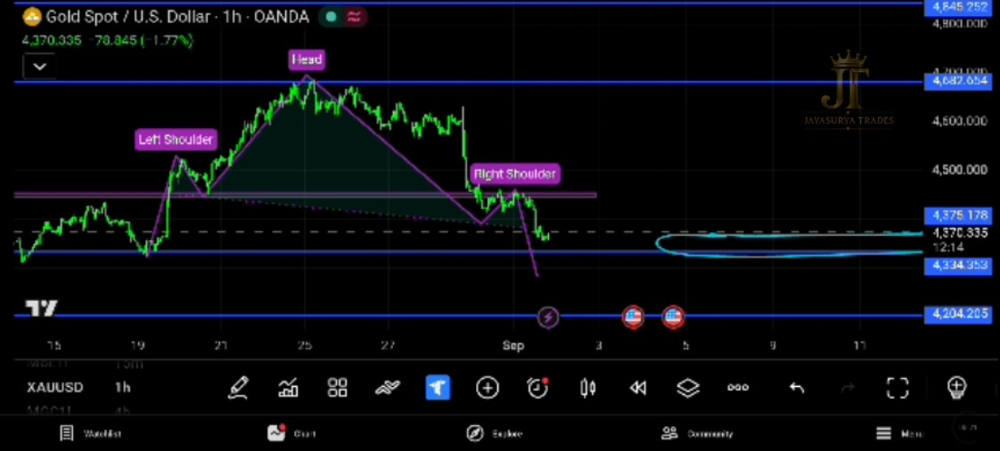
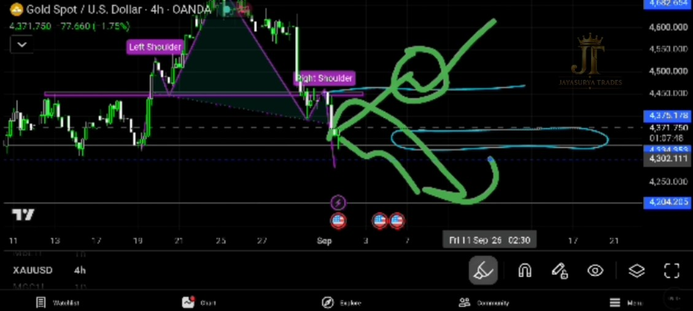

In the previous analysis made on August 31, 2026 for September 1, I identified the 4375.178–4334.353 area as an important key decision zone. Price has now moved down from the previous market area and reached the 4375.178–4334.353 zone exactly as identified in that analysis. This movement is an important validation of the level previously identified and now brings a new structure into focus for the next market move.
Watch Today's XAUUSD Analysis

What Happened After Yesterday's Analysis?
In the August 31 analysis made for September 1, I highlighted the 4375.178–4334.353 area as the key decision zone. Price has now moved downward and reached this exact zone. This is important because the level identified in the previous analysis has now become the area where the next major reaction of Gold needs to be observed.

4-Hour Head & Shoulders Breakout
Today, I have identified a specific Head and Shoulders pattern on the 4-hour timeframe. The pattern has broken downward, and based on the principles I follow to identify breakout areas, this breakout can be considered an important structural development.
A Head and Shoulders pattern breaking to the downside can indicate the start of a potential downtrend. At this stage, the market structure is therefore showing a bearish development, but the reaction around the important price zones remains critical.
Aggressive vs Conservative Approach
For an aggressive approach, traders may generally begin considering the Head and Shoulders breakout as the potential start of a downtrend because the pattern has already broken downward.
For a conservative approach, the Head and Shoulders breakout can be treated as one confirmation, while waiting for a candle close below the 4375.178–4334.353 key decision zone for additional confirmation of the bearish move.

The Key Decision Zone
The important zone identified in the previous analysis remains:
The area between 4375.178 and 4334.353 remains an important decision zone. If this zone breaks decisively downward and the market confirms the move with the appropriate candle close, the bearish structure could continue to develop.
Bearish Scenario
With the 4-hour Head and Shoulders pattern already broken downward, the bearish scenario is currently the primary structure I am watching. For a more conservative confirmation, I want to see the market establish a candle close below the 4375.178–4334.353 zone.
If the downtrend has started and price continues to move in the expected direction, the next immediate support I am watching is:
If bearish momentum continues after the decision zone is broken, 4204.205 becomes the next important support level to monitor.
When Can I Look For Bullish Setups?
Since the Head and Shoulders pattern has broken downward, I am not looking to assume a bullish move immediately. For bullish setups, the important level I am watching is:
Only after the market makes a candle close above 4450.140 can bullish setups come back into focus. The close above this level would provide a stronger indication that the current bearish structure is losing strength and that the market may be preparing for a bullish move.
If the market makes a confirmed candle close above 4450.140, the immediate resistance I am watching is 4682.654.
How I Am Approaching Gold Tomorrow
For September 2, the focus is not about predicting every movement. The Head and Shoulders breakout has provided an important structural signal. Now I am watching how price behaves around the key levels and waiting for confirmation.
- The previous analysis correctly identified the 4375.178–4334.353 zone, and price has now reached that area.
- A 4-hour Head and Shoulders pattern has broken downward.
- Aggressive traders may consider the breakout as the potential start of a downtrend.
- Conservative traders may wait for a candle close below 4375.178–4334.353 for additional confirmation.
- If the bearish move continues, watch 4204.205 as the next immediate support.
- For bullish setups, wait for a candle close above 4450.140.
- If price confirms above 4450.140, watch 4682.654 as the next resistance.
The market does not need to be predicted at every moment. The objective is to identify the structure, identify the important levels, and allow price behaviour to confirm which scenario is developing.
Know the structure.
Know the level.
Wait for confirmation.
Let the market confirm the move.
Key Takeaways
- Yesterday's analysis identified the 4375.178–4334.353 decision zone, and price has now reached that zone.
- A Head and Shoulders pattern has formed on the 4-hour timeframe and broken downward.
- The breakout can be considered a potential start of a downtrend from a pattern perspective.
- Aggressive traders may consider the breakout, while conservative traders may wait for a candle close below the key decision zone.
- 4375.178–4334.353 remains the important bearish confirmation zone.
- If the bearish move continues, 4204.205 is the next immediate support to monitor.
- A candle close above 4450.140 can bring bullish setups back into focus.
- Above 4450.140, the next resistance I am watching is 4682.654.
Know the structure.
Know the level.
Wait for confirmation.
Let the market confirm the move.
Risk Disclaimer
This content is provided for educational and informational purposes only and does not constitute financial, investment, or trading advice or a recommendation to buy or sell any financial instrument. Market analysis represents observations and potential scenarios and may not reflect future market movements. Trading involves substantial risk. Always conduct your own research and make independent decisions.